未来社区设计概念说明：为解决城乡长期割裂发展带来的城市环境恶化，我们将结合农业生产、居住、办公、公服功能的新型社区综合体以条形山脉的形式置入城市。它将作为人造绿脉、自然廊道优化城市环境；农业产出居民共享，反哺社区维护与更新的支出；结合立体农业的居住模式，创造城市中的'归园田居'；社区共建田地、家庭田地、公共厨房等种植主题的公共空间为居民重构人际联系。
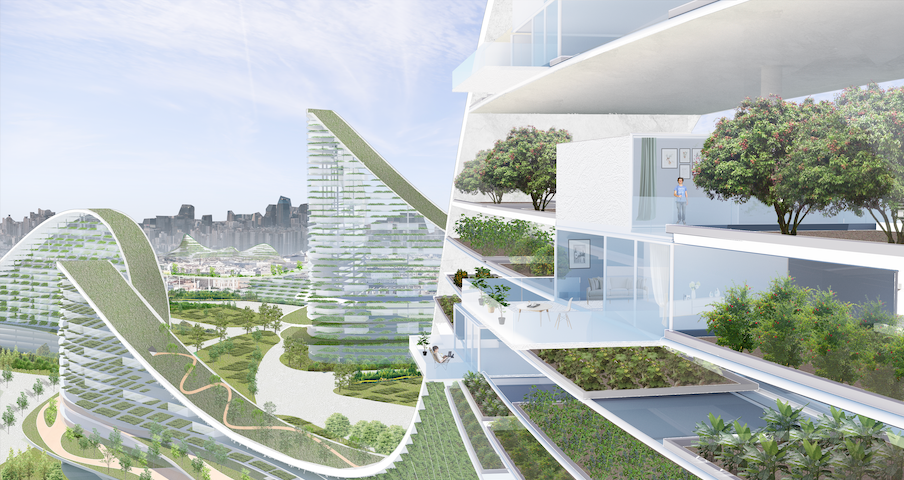
包括钢筋混凝土森林缺少绿色，脆弱的食品供应链......
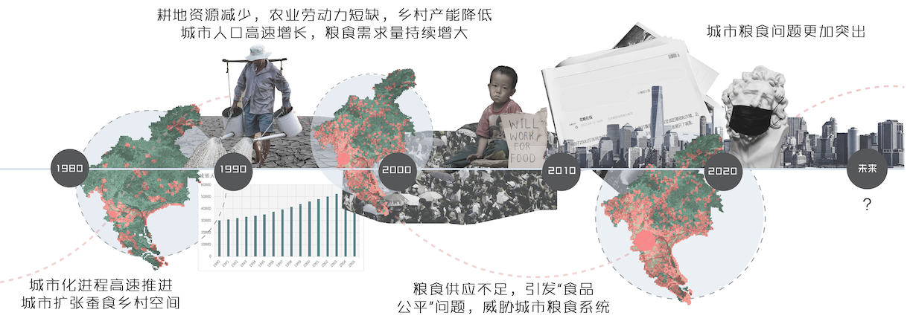
人向往自然，我们如何让居民享受更多绿色，更多自然？
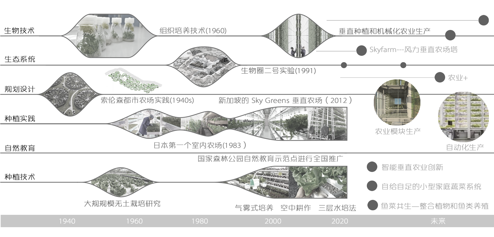
自城市化以来，建筑师与规划师一直在探索如何让城市和自然更融合，生态更友好。
农业生产的新技术——自动化集约生产、农业模块、利用传感器实现特异性培养方式增大单位产量等, 为农场进入城市提供了可能，实现“农业+居住”的全新居住形态。
从农村走向城市，邻居变成最熟悉的陌生人。原子化的社会让个体变得脆弱，让社区变得无人情味。我们该如何重构起近邻关系中积极的部分？形成友好、有归属感、韧性、互助的可持续社区。
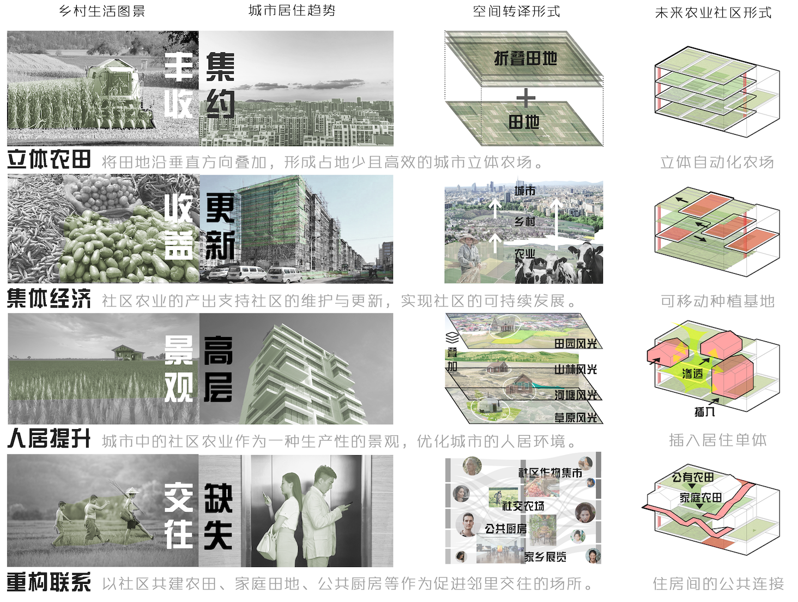
我们设计的未来居住综合体是丝带状的立体农场，中间插入居住单元的形式。农场是生产的场所，也是城市的景观，还是居民社交的空间。类似农村集体经济，农场的收益将回馈社区，回馈居民。
立体农场呈现丝带状，插入城市，构成城市的绿色廊道
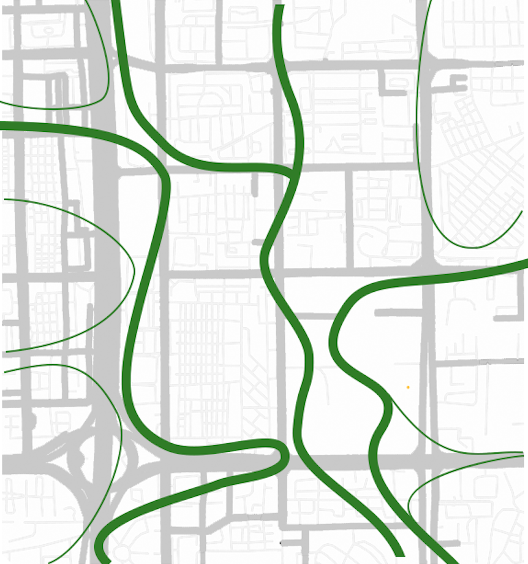
立面呈现山脉造型，形成人造山脉的自然景观
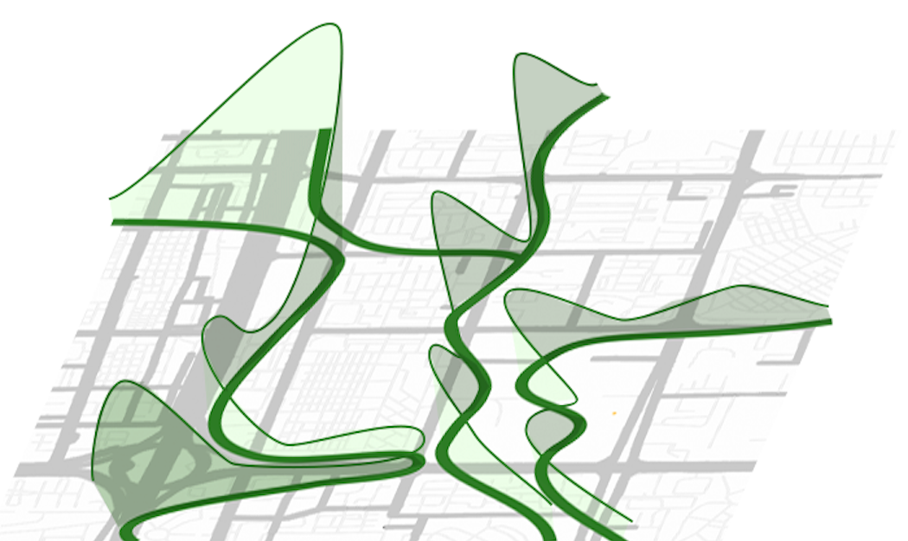
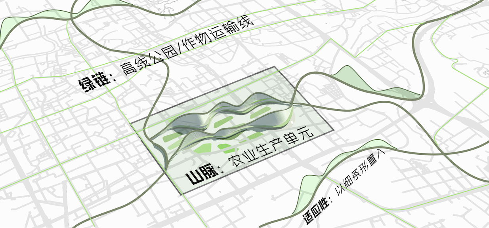
农业居住系统复合了农业生产、居住、公共活动三种功能, 利用轨道运输农业生产的基底和物资设备, 利用空中街道串联住房、私家庭院以及公共空间,形成复合的垂直社区
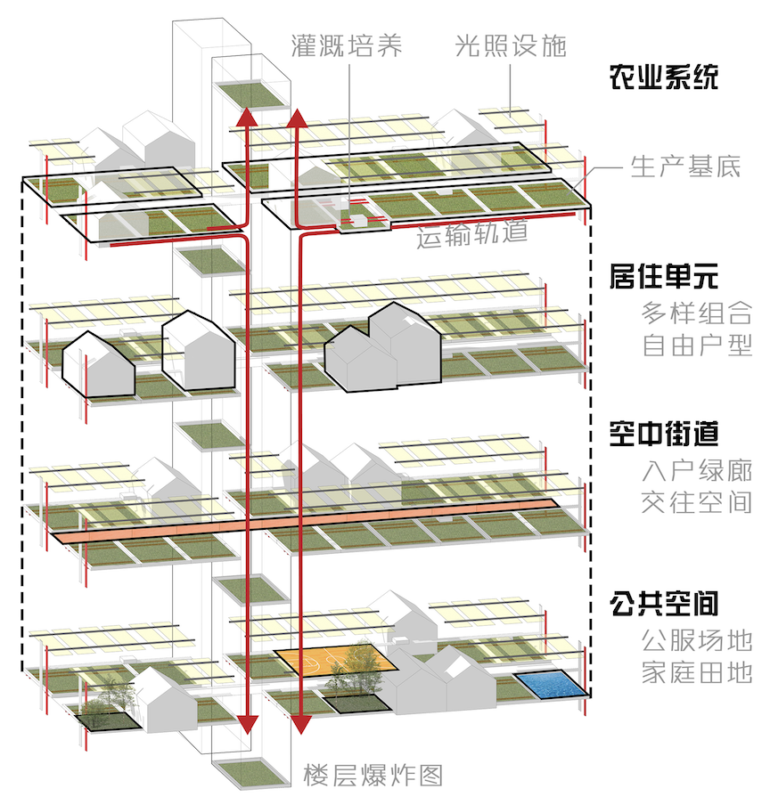
空中街道结合自然生产景观、家庭庭院以及公共空间,创造绿色、健康的人居环境
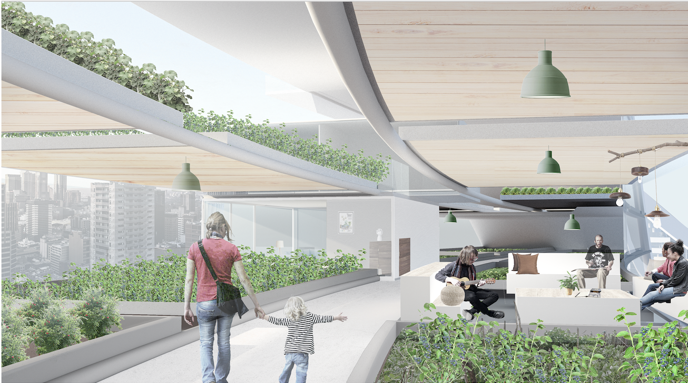
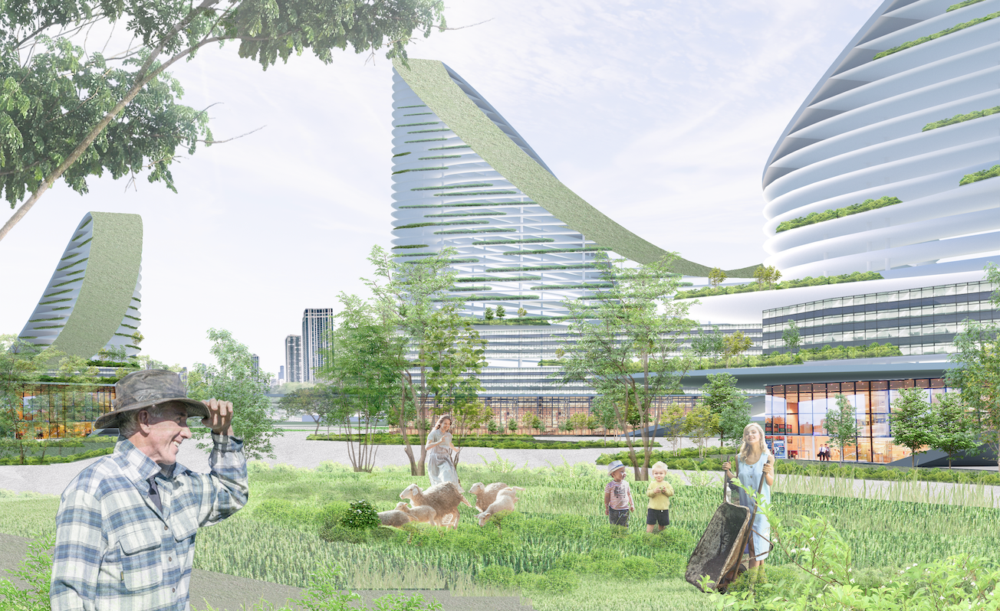
社区农场、社区耕作活动作为激发交往的媒介
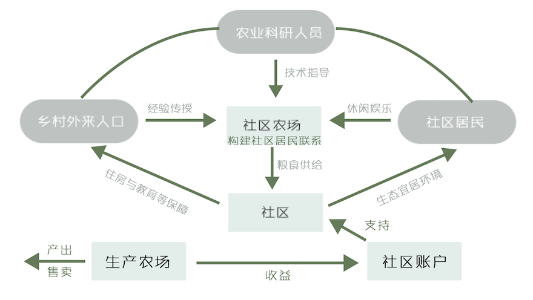
在新的社区合作框架下，不同的群体（居民、新居民、外来人口、外部合作）各得其所，共享收益
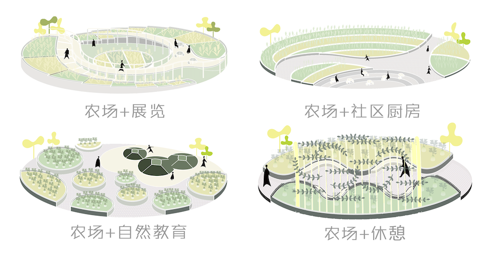
多样的活动类型及空间
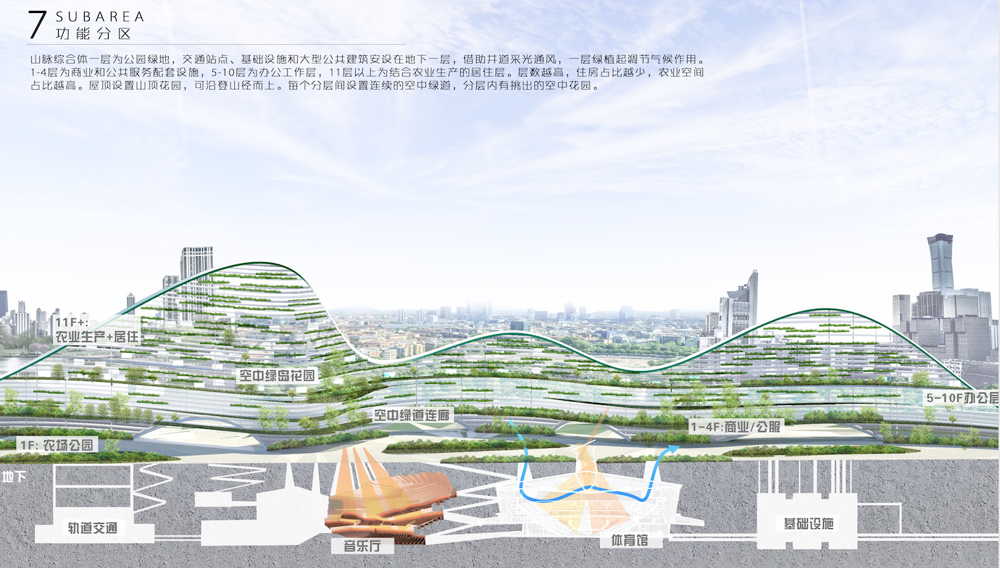
山脉综合体一层为公园绿地，交通站点、基础设施和大型公共建筑安设在地下一层,借助井道采光通风，一层绿植起调节气候作用。
1-4层为商业和公共服务配套设施，5-10层为办公工作层，11层以上为结合农业生产的居住层。层数越高,住房占比越少,农业空间占比越高。屋顶设置山顶花园,可沿登山径而上。每个分层间设置连续的空中绿道，分层内有挑出的空中花园。
本项目是团队合作成果
Future Community Design Concept: To address urban environmental decline caused by the long-term separation of urban and rural development, we propose a new community complex that integrates agriculture, housing, offices, and public services in the form of a linear mountain range. It acts as an artificial green artery and natural corridor, while shared agricultural production supports community maintenance and renewal. By combining vertical farming with housing, it creates an urban version of pastoral living. Shared farms, family plots, and public kitchens also help rebuild social connections among residents.
Including the lack of greenery in concrete-dominated cities and the fragility of urban food supply chains......
People are drawn to nature—how can we bring more greenery and natural experiences into everyday urban living?
Since the onset of urbanization, architects and planners have been exploring how to better integrate cities with nature and create more ecologically responsive environments.
Emerging agricultural technologies—such as automated intensive production, modular farming systems, and sensor-based precision cultivation to increase yield—now make it feasible to bring farming into the city, enabling a new “agriculture + living” residential model.
As people move from rural areas to cities, neighbors often become familiar strangers. Social atomization weakens individuals and erodes a sense of community. How can we reconstruct the positive aspects of close-knit neighborly relations to foster a friendly, inclusive, resilient, and mutually supportive community?
Our proposed future residential complex takes the form of a ribbon-like vertical farm, with housing units embedded within it. The farm functions not only as a site of production, but also as an urban landscape and a social space for residents. Drawing on the logic of rural collective economies, the farm’s revenues are reinvested into the community and shared among residents.
The ribbon-like vertical farm is inserted into the city, forming a continuous green corridor.
The façade adopts a mountain-like form, creating an artificial landscape reminiscent of natural ranges.
The agro-residential system integrates agricultural production, housing, and public activities. It uses rail systems to transport farming substrates and materials, and aerial streets to connect housing units, private gardens, and shared spaces, forming a mixed-use vertical community.
Aerial streets integrate productive landscapes, private gardens, and shared spaces to create a green and healthy living environment.
Community farming activities foster social interaction
Under a new community collaboration framework, diverse groups—residents, newcomers, migrants, and external partners—each find their roles and share in the benefits.
Diverse programmatic activities and spatial typologies
The ground level of the mountain complex is designed as a public green park. Transportation hubs, infrastructure, and large public facilities are located on the basement level, with light wells providing natural daylight and ventilation. The vegetation at ground level helps regulate the microclimate.
Levels 1–4 accommodate commercial and public service functions, levels 5–10 are designated for offices, and levels above 11 are residential spaces integrated with agricultural production. As height increases, the proportion of housing decreases while agricultural space expands. The roof features a summit garden accessible via a climbing path. Continuous elevated greenways connect different levels, with sky gardens extending within each layer.
This project was developed in collaboration